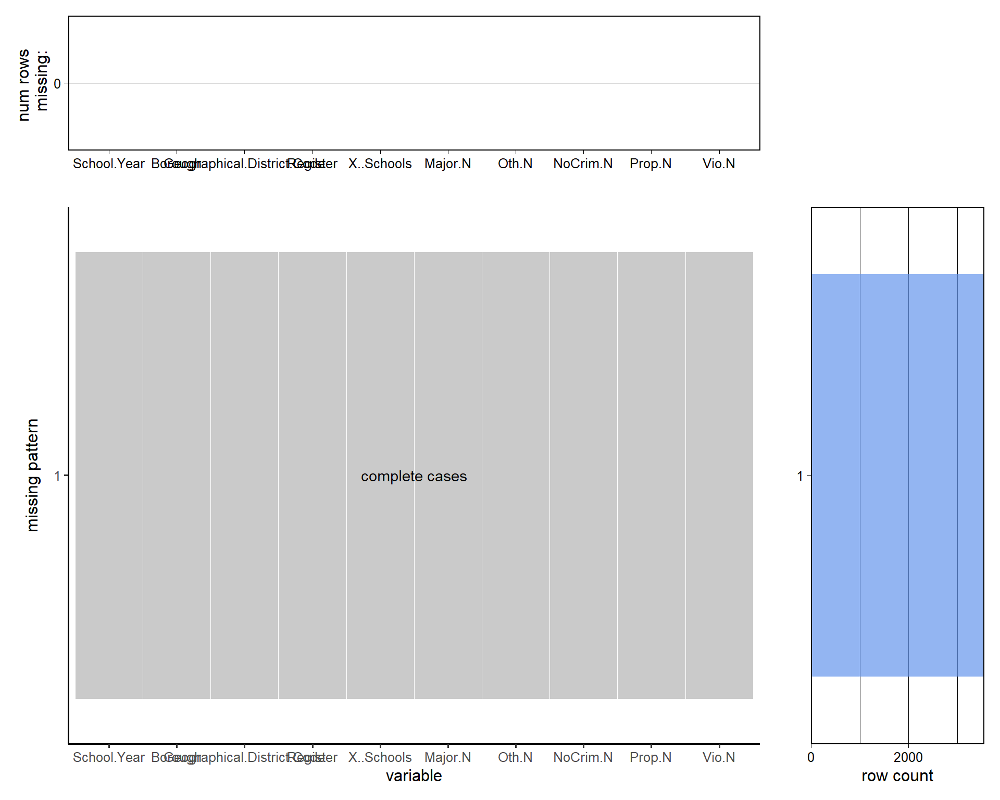
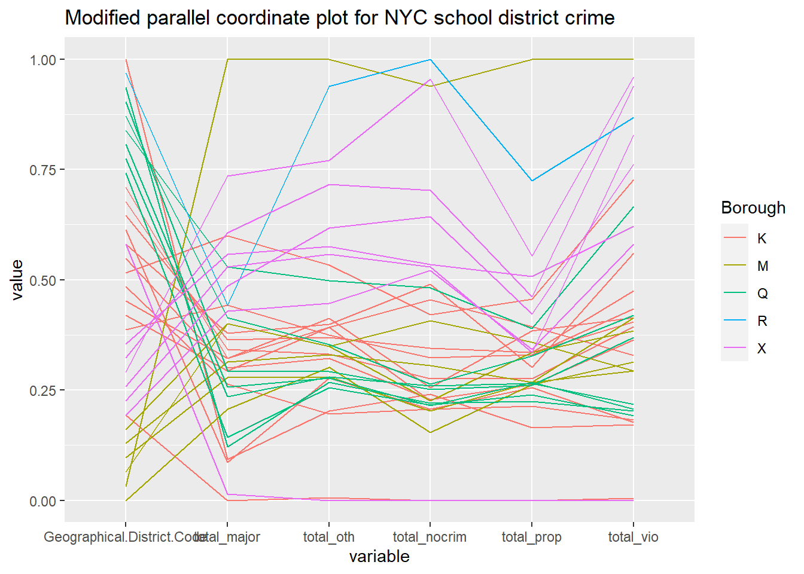

Chapter 4 Results
4.1 1. Scatterplot for total crimes v.s. total number of students

It is natural to ask if the total number of students positively correlates to the total number of school crimes for each geographical district. To answer this question, we plot the scatterplot of the total number of students and the total number of school crimes for each district in each school year. To find the total number of students, we take the sum of schools from the same district and school year. The total number of crimes in each school is the sum of five different types of crimes provided in the data. The total number of crimes is the sum of the total number of crimes in each school from the same district and school year. The correlation between the two variables is calculated and displayed in the graph. Contradicting our intuition, the correlation is very weak. The plot shows that the larger number of registered students in the district is not strongly correlated with the total number of school crimes in each district. The scatterplot explains the weak correlation. When the total number of registered students is high, some districts have a high number of school crimes, while others don’t.
4.2 2. Parallel coordinate plot for school districts
 A parallel coordinate plot is useful for finding outliers and clusters. In this case, we are interested in finding which school district has a large number of overall crimes. Five different types of crime are calculated for each district by taking the sum by schools over three years. We found two outliers, district 2 from Manhattan and district 31 from Staten Island. Then, we see several districts from the Bronx have school crime well above other districts. We also observed a cluster of districts from the Queen has low overall crimes. Based on this plot, we can assume the Bronx has the highest overall school crimes, while the Queen has the lowest overall crime.
4.3 3. Treemap for total registered students and the number of school in each districts
Which geographical district has the largerest number of students, which geographical district has the smallest number of students? What is the distribution of registered stduent in NYC? To answer those questions, we can plot a treemap that includes the total population of each geographical district.

What is the distribution of schools and students over all districts and boroughs? We used a treemap to ask this question. Each row in our dataset is a building, one building can have multiple schools. This is why there is a column for the number of schools for each row. To find the number of students and number of schools for each district, we simply take the sum by groups. We can see that Brooklyn and Queens have the largest number of students, while Bronx and Manhattan have a similar number of students. The Number of schools is more evenly distributed in the Bronx than in Manhattan. The number of schools is more evenly distributed in Queens than in Brooklyn.
4.4 4. Time Series of total crime in New York City
What is the trend of each type of crime over time? To answer this question, we plot a time series plot for the total number of each type of school crime in NYC over years. The process is straightforward. We take the sum of each type of school crime group by year. We observe a slight increase in the total number of non-criminal crimes over time. We observe a slight decrease in the total number of property crimes, major crimes, and other crimes over time. We observe no change in the total number of violent crimes. However, those changes are very small, we might just say the total number of each type of school crime in NYC is about the same each year.
4.5 9. matrix dot plots for 5 different type of crimes

At this point, it is good to ask about the level of a school district, are each type of school crime correlated. To answer this question, we can use matrix dot plots. We summarise the sum of each type of crime grouping by districts and school year. We observe a strong correlation between any pair of different types of school crime. All the correlations are positive, thus a district with a high number of one type of crime is also likely to have a high number of other types of school crimes.
4.6 11. Scatterplot with total school and total crime

In the PCA section, we observed that the number of schools in a district is strongly correlated to the number of total crimes. To verify the assumption, we plot a scatter plot of the total number of crimes vs. the total number of schools in each district. We calculated the total number of crimes in the same way as the first plot. The total number of schools is calculated by summing up the “X..Schools” column by groups. We observed a strong positive correlation. Hence indeed, if a district has a large number of schools, it is also likely to have a large number of crimes.